Science is not finished until it is communicated.
Sir Mark Walport

Ongoing Projects and recent papers:
Las Cumbres Observatory Key
Project: LCO follow-up of TESS transiting planet
candidates
I am the PI of a Las Cumbres Observatory (LCO)
Key Project where transiting planet candidates detected in
the NASA TESS Mission data are
observed, as part of multi step follow-up observations aimed
at identifying the real planets among the many candidates.
The Key Project includes about 15,000 hours of telescope
time on the LCO network of telescopes over 3 years (6 LCO
semesters) from August 2023 to July 2026. The Key Project is
part of the discovery of most new planets discovered by the
TESS mission.
This is the second consecutive LCO Key Project devoted to
transiting planet candidates observations led by the same
group, following a 3-year LCO Key Project from 2020 to 2023.
See more information here.
The TESS M-dwarf Opportunity -
Discovering small planets around small stars
The TESS version of the well known "M-dwarf
opportunity" takes advantage of the small size and
(typically) high proper motion of M-dwarf transiting planet
candidates host stars, in order to rule out each of the
several false positive scenarios, thereby showing that the
only viable scenario is a transiting planet orbiting the
target star. This approach does not use high precision
radial velocities (RVs), which in most of the relevant cases
is not attainable due to the system's small RV amplitude.
This technique enables the discovery of small, terrestrial
planets around nearby stars, thereby helping to put the
solar system terrestrial planets in exoplanet context.
This work has led to the discovery of several small,
terrestrial planets:
Tey,
Shporer, Lin, et al., 2024 - GJ 238 b: A 0.57
Earth radius planet orbiting an M2.5 dwarf star at 15.2
pc.
Shporer
et al. 2020 - GJ 1252 b: A 1.2 R_Earth planet
transiting an M3-dwarf at 20.4 pc.
Gan,
Shporer, et al. 2020 - LHS 1815 b: The first
Thick-disk planet detected by TESS.
The figure below shows the position of GJ 238 b,
discovered as part of this work, in the planet radius vs.
distance to the system parameter space. GJ 238 b is close to
Mars' radius, exemplifying the potential of this approach to
discover small planets.
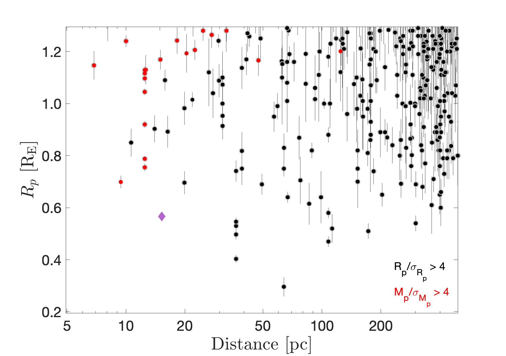
Visible-light orbital phase curve
modulations
Primary collaborator: Ian Wong.
Space-based transit surveys (CoRoT, Kepler, K2, TESS) are
routinely providing visible-light continuous long baseline
high-precision time series photometry for a large number of
stars. This high quality data has enabled astrophysical
studies not possible before, including the study the minute
photometric variability following the orbital motion in
stellar binaries and star-planet systems. The orbital
modulations are induced by a combination of gravitational
and atmospheric processes, including the beaming effect,
tidal ellipsoidal distortion, reflected light, and thermal
emission. Therefore, the phase curve shape contains
information about the companion's mass and atmospheric
characteristics, making phase curves a useful astrophysical
tool. I have reviewed this subfield in Shporer
2017 (PASP Invited Review) - The astrophysics of
visible-light orbital phase curves in the space age.
The TESS mission data is sensitive to the orbital phase
modulations of many short-period gas-giant planets (aka hot
Jupiters). We have used this data to carry out a systematic
study of hot Jupiter phase curves:
Wong,
Shporer, et al. 2020, Systematic phase curve
study of known transiting systems from Year 1 of the
TESS Mission.
Wong,
Kitzmann, Shporer, et al. 2021, Visible-light
phase curves from the second year of the TESS primary
mission.
We have also studied the phase curves of a few individual
systems in detail:
Shporer et al. 2019, TESS
full orbital phase curve of the WASP-18b system.
Wong,
Shporer, et al. 2020, Exploring the atmospheric
dynamics of the extreme ultra-hot Jupiter KELT-9b using
TESS photometry.
Wong,
Benneke, Shporer, et al. 2020, TESS phase
curve of the hot Jupiter WASP-19 b.
Beatty
et al. (inc. Shporer) 2020, The TESS phase
curve of KELT-1b suggests a high dayside albedo.
Daylan et al. (inc. Shporer)
2021, TESS observations of the WASP-121 b phase curve.
In addition, we have identified a new planet with large
phase modulations:
Wong,
Shporer, et al. 2021, TOI-2109: An ultrahot gas
giant on a 16 hr orbit.
Targets that are favorable for the detection of phase curves
are also favorable for the detection of tidal orbital decay,
as they are short period and massive planets. We are been
monitoring several systems in search for orbital decay, and
have measured an updated decay for WASP-12:
Wong,
Shporer, et al. 2022, TESS revisits WASP-12:
Update orbital decay rate and constraints on atmospheric
variability.
As an example of phase curve modulations the figure below
shows the WASP-18b TESS full phase curve in the top panel.
The mid panel is a zoom in on the phase modulation and
secondary eclipse, where the red line is the fitted model
and the phase curve is decomposed to the three components
including beaming (dotted black line), ellipsoidal (solid
black line), and atmospheric (dot-dash black line). The
bottom panel shows the residual from the fitted model, in
ppm.
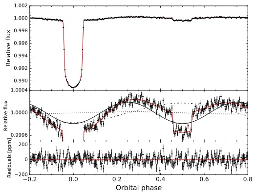
Previous work:
The Warm Jupiters project -
Studying the inflated gas giant exoplanet conundrum
Many of the short period gas giant exoplanets
(aka hot Jupiters) have radii larger than theoretically
expected. Although several explanations have been proposed
none have completely solved this puzzle. One clue to
understanding gas giant inflation is the empirical
correlation between planet radius and stellar irradiation at
the planet's orbit. While it is consistent with inflation
due to increased stellar irradiation it does not identify
the exact mechanism, and, correlation does not necessarily
mean causation. That correlation is shown as a solid red
line in the plot below, showing planet radius as a function
of stellar irradiation for gas giants with a well measured
radius and mass. The plot shows that due to low number
statistics it is not clear how low in planet radius and
irradiation the correlation continues and whether there are
indeed no inflated gas giant below a certain irradiation
level.
We have set out to detect transiting gas giants with an
irradiation below about 108 erg s-1 cm-2,
which we refer to as Warm Jupiters. The primary goal
is to better characterize the radius-irradiation
correlation.
A second goal is to study orbital migration by
measuring the orbital eccentricity of warm Jupiters. Due to
their wider orbits warm Jupiters are not expected to be
tidally circularized, hence their eccentricity distribution
is a fingerprint of orbital migration processes.
A third goal is to detect gas giants with lower
equilibrium temperatures, for atmospheric studies, and with
a weaker tidal interaction with the host star, for stellar
obliquity studies.
The transiting Warm Jupiter candidates for this project are
identified in K2 and TESS data.
The first two warm Jupiters discovered by this program were
published in Shporer
et al. 2017a. Another candidate turned out to be
a brown dwarf, published in Bayliss
et al. 2017, see also the AAS
press conference about that discovery. Radial velocity
follow-up Observations carried out as part of this program
have also identified that 3 of the statistically validated
K2 planets are in fact stellar binaries, published in Shporer
et al. 2017b.
Additional publications of warm Jupiters that resulted from
this project include Yu
et al. (including Shporer) 2018, Rodriguez
et al. (including Shporer) 2019, Jordan
et al. (including Shporer) 2019,
Addison
et al. (including Shporer) 2020, Jordan
et al. (including Shporer) 2020.
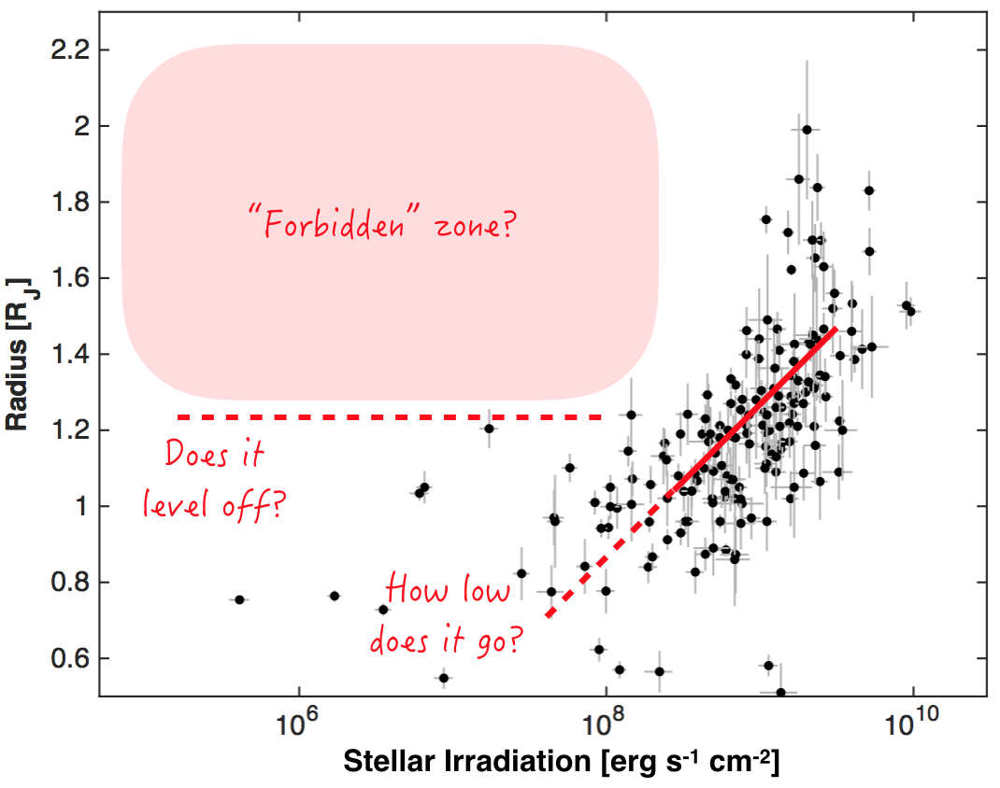
Radial velocity monitoring of Kepler heartbeat stars
with Keck/HIRES
Primary collaborators: Jim Fuller, Kelly Hambleton, Susan
Mullally.
Heartbeat stars are an emerging class of eccentric binary
stars with close periastron passages. The characteristic
heartbeat signal evident in their light curves is produced
by a combination of tidal distortion, reflection, and
Doppler boosting near orbital periastron. Many heartbeat
stars continue to oscillate after periastron and along the
entire orbit, indicative of the tidal excitation of
oscillation modes within one or both stars. These systems
are among the most eccentric binaries known, and they
constitute an exciting opportunity to observe tidal effects
in action. We are carrying out a radial velocity monitoring
of Kepler heartbeat stars using Keck/HIRES, in order
to measure the orbit and characterize the two stars. Our
sample currently includes over 30 systems, which is the
largest sample of these unique systems where the orbit was
measured with radial velocities. Our goal is to understand
the formation and evolution of heartbeat stars, and to use
them to study the processes of tidal dissipation and orbital
migration. The physics learned from them will apply to many
other astrophysical systems, such as high-eccentricity
planet migration and eccentricity-induced mergers in triple
systems.
The figure below shows on the left panel a Kepler
phase folded light curve of a Heartbeat star (measurements
in gray, smoothed light curve in red), along with the radial
velocity orbit on the right panel (measurements in black,
fitted orbital model in red). The orbital eccentricity of
this binary systems is ≈0.8.
The first results from this project are published in Shporer
et al. 2016, are presented on this
website, and were featured in JPL
News. Additional publications from this project
include: Hambleton
et al. (including Shporer) 2016, Hambleton,
Fuller, Shporer, et al. 2017, Zimmerman
et al. (including Shporer) 2017, Hambleton
et al. (including Shporer) 2018, Guo,
Fuller, Shporer, et a. 2019, Guo,
Shporer, et al. 2020.

Time Variation of Kepler Transits Induced by Stellar
Spots —
A Way to Distinguish between Prograde and Retrograde
Motion
Primary collaborators: Tomer Holczer, Tsevi Mazeh
Some transiting planets discovered by the Kepler
mission display transit timing variations (TTVs) induced by
stellar spots that rotate on the visible hemisphere of their
parent stars. An induced TTV can be observed when a planet
crosses a spot and modifies the shape of the transit light
curve, even if the time resolution of the data does not
allow the detection of the crossing event itself. Our new
approach can, in some cases, use the derived TTVs of a
planet to distinguish between a prograde and
a retrograde planetary motion with respect to the
stellar rotation. Assuming a single spot darker than the
stellar disk, spot crossing by the planet can induce
measured positive (negative) TTV, if the crossing occurs in
the first (second) half of the transit. On the other hand,
the motion of the spot toward (away from) the center of the
stellar visible disk causes the stellar brightness to
decrease (increase). Therefore, for a planet with prograde
motion, the induced TTV is positive when the local slope of
the stellar flux at the time of transit is negative, and
vice versa. Thus, we can expect to observe a negative
(positive) correlation bet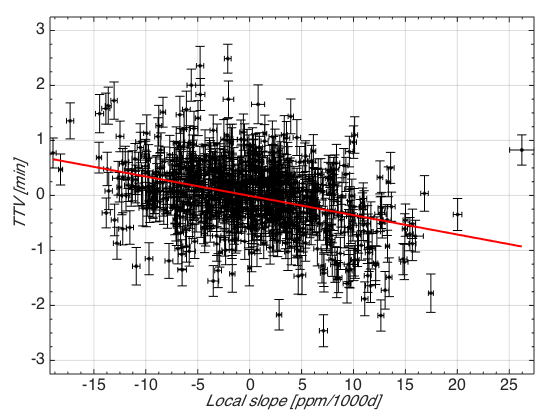ween the TTVs and the photometric slopes for
prograde (retrograde) motion. Detecting this correlation in
Kepler transiting systems allows to distinguish
between prograde and retrograde planetary motions, and a
similar approach can be applied to eclipsing binaries. The
figure on the left shows an example of a the detection of a
negative correlation between TTV and local slope, for
Kepler-17b. This suggests the system is in a prograde
motion, as already identified in Desert et al. (2011, ApJS,
197, 14).
This project resulted so far in two publications:
Mazeh,
Holczer, & Shporer 2015, ApJ, 800, 142 -
Detailed description of the method.
Holczer,
Shoprer, et al. 2015, ApJ, 807, 170 -
Application of this method to KOIs.
- Evidence that inhomogeneous atmospheric reflection is common,
- Shporer
& Hu 2015, AJ, 150, 112
- In this work we sought out to study hot Jupiter atmospheres through their Kepler (i.e. optical) phase curves. However, typically when a phase curve signal is identified it is a super position of several processes, including not only atmospheric processes (reflected light and thermal emission) but also gravitational processes like the beaming effect and tidal ellipsoidal distortion. Therefore, interpreting the Kepler phase curve requires simultaneous modeling of all processes which may introduce degeneracies. Therefore we studied 3 phase curves that show only an atmospheric signal while the gravitational processes are negligible. We model 2 of those light curves in this work (Kepler-12b and Kepler-41b), shown in the figure below, and a 3rd phase curve (Kepler-7b) was analyzed elsewhere. Somewhat surprisingly all 3 phase curves show a maximum at a later phase than the secondary eclipse phase. We interpret this as resulting from an asymmetric brightness distribution, in the optical, of the planets' atmosphere where the brightest region is shifted west of the substellar point. This is consistent with results based on IR phase curves of other systems. Since these 3 phase curves are the only ones where the atmospheric component is seen directly (without the gravitational signal) and they all show an asymmetric atmospheric brightness distribution, it suggests that a similar asymmetry exists in many other hot Jupiter atmospheres as well. We discuss the possible implications of such asymmetry.
- 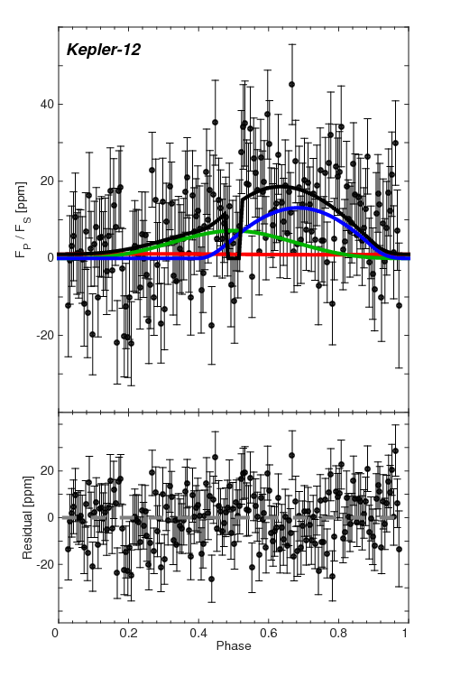

- Atmospheric
characterization of the hot Jupiter Kepler-13Ab,
Shporer et al. 2014, ApJ, 788, 92
Kepler-13Ab is a rare hot Jupiter as it orbits the hottest star currently known to host a hot Jupiter, hence it is one of the hottest known hot Jupiters. In a previous paper, Shporer et al. (2011), I measured its mass using the Kepler orbital phase curve. In this paper we set out to characterize it in more detail, especially its atmosphere. We measured the secondary eclipse in several different wavelengths: optical (Kepler), near-IR (P200/WIRC; although with a low S/N) and IR (Spitzer). The left panel below shows the Kepler secondary eclipse phased and binned light curve. The high S/N, of > 300, makes it one of the most significant measurements of an exoplanet secondary eclipse. The right panel shows how the various secondary eclipses constrain the geometric albedo (Ag) and brightness temperature (TD) parameter space. The combination of these constraints gives TEFF = 2,750 ± 160 K and Ag = 0.33 ± 0.06 for the day-side, confirming the expected high day-side temperature and identifying a high albedo. The host star has a visual binary companion 1.2 arcsec away, so they are fully blended in all our photometric data sets. We obtained a Keck/HIRES spectrum of each of the two stars and derived the flux ratio as a function of wavelength, which we then integrated to get the dilution factor for each of our data sets. The improved host star parameters we derived from the spectrum made it smaller and cooler than previously thought. This in turn led to a smaller planet radius based on the measured transit depth. This work also included an analysis of the Kepler full orbital phase curve, deriving a night-side brightness temperature and a refined planet mass through the beaming effect and the tidal ellipsoidal distortion of the host star. We also noticed that the secondary eclipse time is 34.6 ± 6.9 seconds earlier than expected based on the mid transit time and light-travel time across the orbit. All data included in this work is publicly available, either through dedicated archives or by request from the authors.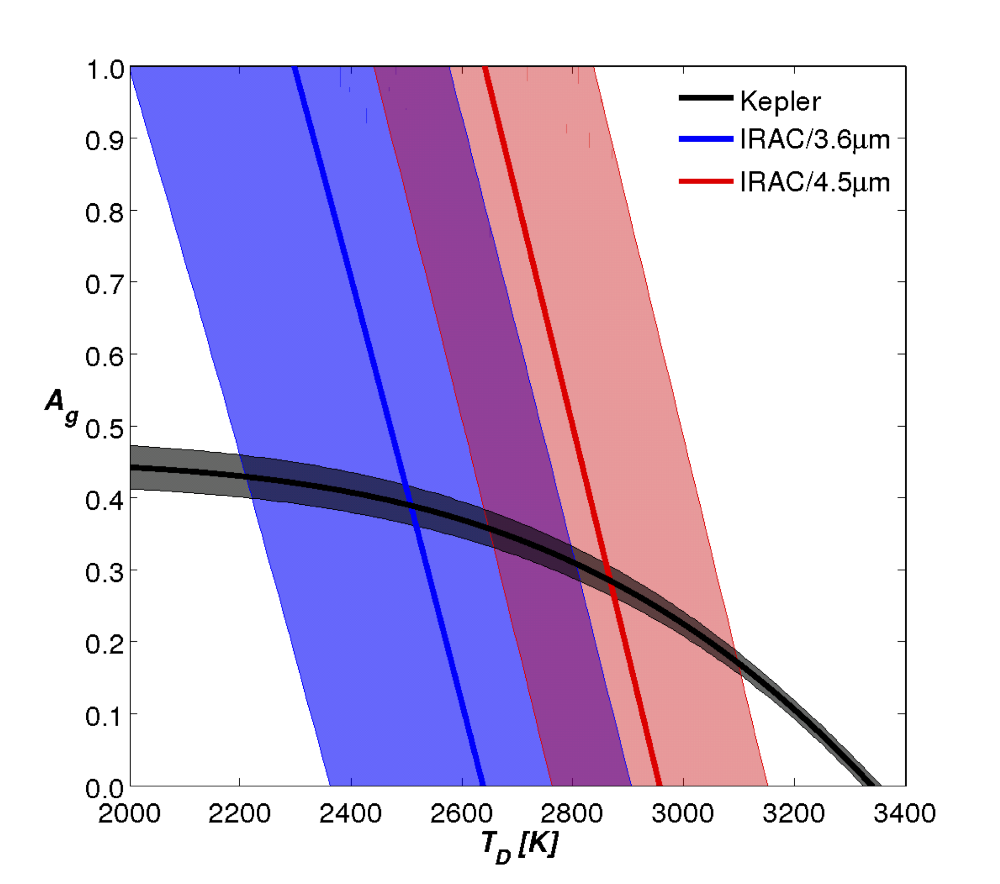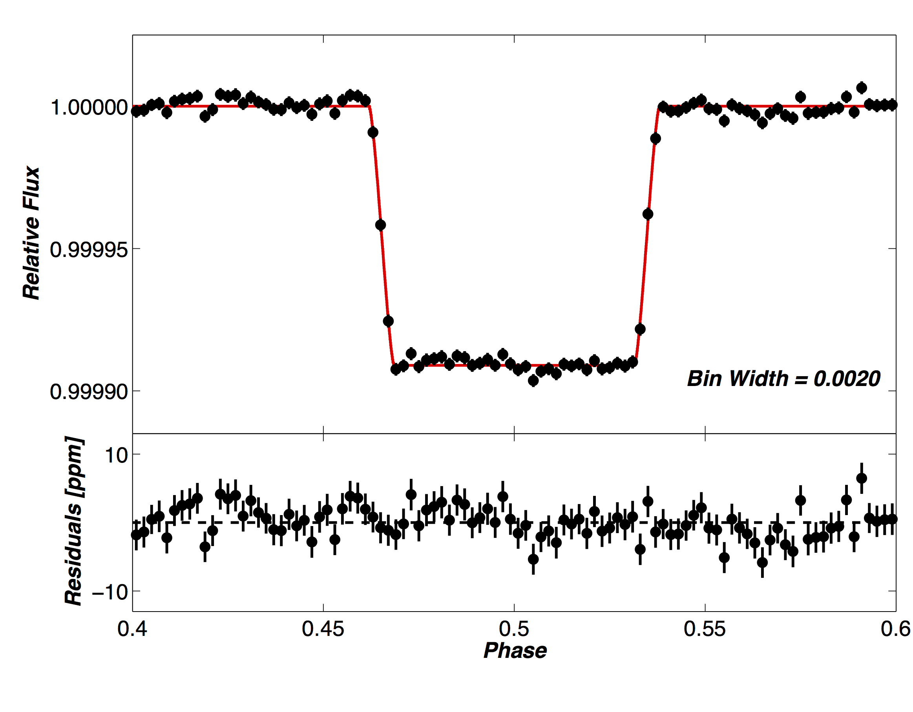
On
using the beaming effect to measure spin-orbit alignment
in stellar binaries with Sun-like components
Shporer
et al. 2012, NewA, 17, 309
The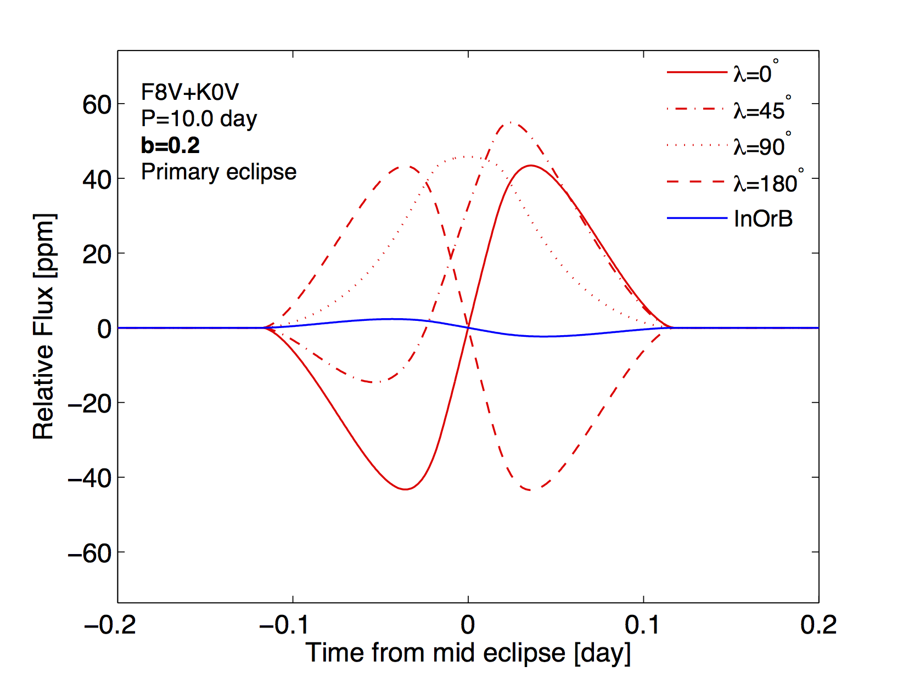 beaming effect
(aka Doppler boosting) is a minute effect that causes the
observed flux of a source to vary following a radial
velocity variation. In this work I applied the beaming
effect to the stellar rotation during eclipses. As the
eclipsing object crosses over the disk of the eclipsed star
it blocks regions with different radial velocity, so due to
the beaming effect it induces a photometric signal that is
superimposed on the eclipse light curve. This signal is the
photometric analog of the spectroscopic Rossiter-McLaughlin
(RM) effect, and is sensitive to the sky-projected angle
between the eclipsed star spin and the orbital angular
momentum, commonly referred to as the spin-orbit angle. The
figure shows the Photometric RM signal during eclipse for
various spin-orbit angles ()
in red, while the blue line shows the variation in the
orbital beaming effect signal during eclipse, as the
contribution from each of the stellar components changes due
to the eclipse. The paper gives analytic approximations to
the Photometric RM effect and discusses prospects of
detecting it in Kepler data.
Detection of KOI-13.01 using the photometric orbit
Shporer et al. 2011, AJ, 142, 195
 The transiting
planet candidate KOI-13.01 showed a clear variability
along the orbit, i.e., a phase curve signal, showed in the
figure to the right. Kepler data is marked as
small gray dots, binned light curve is in black circles
(marker size similar to error bars), and the gray thick
line is the fitted model. Data within the transit
(phase=0) and secondary eclipse (phase=0.5) is excluded.
The variability along the orbital motion is composed of
several components, shown in dashed line is the figure.
Those include the beaming effect (B, red), the tidal
ellipsoidal distortion (E, blue) and atmospheric
reflection and thermal emission (R, green). By analyzing
the phase curve I measured the planet's mass, thereby
confirming its planetary nature since high precision
radial velocities cannot be obtained for the hot
early-type host star. This was the first time that an
exoplanet mass was measured with the phase curve alone. I
also showed that while excluding the transit and secondary
eclipse data the planet can be detected using the phase
curve modulations.
The transiting
planet candidate KOI-13.01 showed a clear variability
along the orbit, i.e., a phase curve signal, showed in the
figure to the right. Kepler data is marked as
small gray dots, binned light curve is in black circles
(marker size similar to error bars), and the gray thick
line is the fitted model. Data within the transit
(phase=0) and secondary eclipse (phase=0.5) is excluded.
The variability along the orbital motion is composed of
several components, shown in dashed line is the figure.
Those include the beaming effect (B, red), the tidal
ellipsoidal distortion (E, blue) and atmospheric
reflection and thermal emission (R, green). By analyzing
the phase curve I measured the planet's mass, thereby
confirming its planetary nature since high precision
radial velocities cannot be obtained for the hot
early-type host star. This was the first time that an
exoplanet mass was measured with the phase curve alone. I
also showed that while excluding the transit and secondary
eclipse data the planet can be detected using the phase
curve modulations.
The
impact of the convective blueshift effect on
spectroscopic planetary transits
Shporer & Brown 2011, ApJ, 733, 30
The convective blueshift (CB) effect is a net blueshift  emanating from the stellar
surface, resulting from a larger contribution of rising hot
and bright gas relative to the colder and darker sinking
gas. Since the CB radial component varies across the stellar
surface, the light blocked by the planet during a planetary
transit has a varying radial velocity component. This in
turn leads to an anomalous radial velocity signal during
planetary transits which is superimposed on the
Rossiter-McLaughlin (RM) effect radial velocity signal and
the Keplerian orbital radial velocity signal. In this work
we show that if not accounted for in the modeling of the
in-transit radial velocity (aka spectroscopic transit) the
CB effect can bias the estimate of the sky-projected
spin-orbit angle, which is commonly measured with the RM
effect. The figure on the right shows a model of a hot
Jupiter orbiting a Sun-like star. The radial velocity
signal induced by the CB effect is shown in a blue line and
that induced by the RM effect in a green line. The top panel
shows only the CB effect signal, the middle panel shows the
RM effect and the RM effect while adding the CB effect
(black line). The bottom panel adds the Keplerian orbital
signal (ORB; black dashed line) where the solid black line
shows the combined signal from the orbit and the RM and CB
effects.
emanating from the stellar
surface, resulting from a larger contribution of rising hot
and bright gas relative to the colder and darker sinking
gas. Since the CB radial component varies across the stellar
surface, the light blocked by the planet during a planetary
transit has a varying radial velocity component. This in
turn leads to an anomalous radial velocity signal during
planetary transits which is superimposed on the
Rossiter-McLaughlin (RM) effect radial velocity signal and
the Keplerian orbital radial velocity signal. In this work
we show that if not accounted for in the modeling of the
in-transit radial velocity (aka spectroscopic transit) the
CB effect can bias the estimate of the sky-projected
spin-orbit angle, which is commonly measured with the RM
effect. The figure on the right shows a model of a hot
Jupiter orbiting a Sun-like star. The radial velocity
signal induced by the CB effect is shown in a blue line and
that induced by the RM effect in a green line. The top panel
shows only the CB effect signal, the middle panel shows the
RM effect and the RM effect while adding the CB effect
(black line). The bottom panel adds the Keplerian orbital
signal (ORB; black dashed line) where the solid black line
shows the combined signal from the orbit and the RM and CB
effects.
A
Ground-based measurement of the relativistic beaming
effect in a detached double white dwarf binary
Shporer et al. 2010, ApJL, 725, 200
 The beaming effect (aka Doppler boosting) is
a minute effect that causes the observed flux of an object
in a binary system to modulate following its radial velocity
(RV) modulation. The photometric amplitude is linear in K/c,
the RV amplitude divided by the velocity of light. Such
small amplitude is usually too small to be measured with
ground-based facilities. Although, similarly to many other
physical processes, the beaming effect becomes much larger
in a system composed of two compact objects. Here I measured
the beaming effect using the LCOGT
FTN 2.0m telescope in the double white dwarf (WD) system
NLTT 11748. This was done following the discovery of
eclipses in this system, making it the first eclipsing
detached double WD system (Steinfadt,
Kaplan, Shporer, et al. 2010). The figure on the right
shows the phase folded light curve at the top, where
different colors mark data from three different nights, and
the binned phase folded light curve at the bottom, shifted
for visibility. The solid black line is the fitted model.
The measured beaming amplitude is 3.0(4) x 10-3
which compares well to the expected amplitude of 3.3(1) x 10-3.
Other processes that might induce photometric modulations
along the orbital motion (tidal ellipsoidal distortion,
reflected light, heating) have a negligible amplitude in
this system. This was one of the first measurements of this
effect, the first measurement done from the ground, and the
first to be done in a double WD system.
The beaming effect (aka Doppler boosting) is
a minute effect that causes the observed flux of an object
in a binary system to modulate following its radial velocity
(RV) modulation. The photometric amplitude is linear in K/c,
the RV amplitude divided by the velocity of light. Such
small amplitude is usually too small to be measured with
ground-based facilities. Although, similarly to many other
physical processes, the beaming effect becomes much larger
in a system composed of two compact objects. Here I measured
the beaming effect using the LCOGT
FTN 2.0m telescope in the double white dwarf (WD) system
NLTT 11748. This was done following the discovery of
eclipses in this system, making it the first eclipsing
detached double WD system (Steinfadt,
Kaplan, Shporer, et al. 2010). The figure on the right
shows the phase folded light curve at the top, where
different colors mark data from three different nights, and
the binned phase folded light curve at the bottom, shifted
for visibility. The solid black line is the fitted model.
The measured beaming amplitude is 3.0(4) x 10-3
which compares well to the expected amplitude of 3.3(1) x 10-3.
Other processes that might induce photometric modulations
along the orbital motion (tidal ellipsoidal distortion,
reflected light, heating) have a negligible amplitude in
this system. This was one of the first measurements of this
effect, the first measurement done from the ground, and the
first to be done in a double WD system.
Ground-based
multisite observations of two transits of HD 80606b
Shporer et al. 2010, ApJ, 722, 880
HD80606b is a unique transiting gas-giant as it has a 111
day eccentric orbit (e = 0.93). Observing a complete
transit is challenging since it is rare due to the long
period and it is 12 hours long so it cannot be observed from
a single ground-based site. We carried out a multisite
campaign including 10 observatories and 13 telescopes to
observe two transits in 2009 and 2010. The phase folded
transit light curve using all 13 data sets is shown below,
where data sets are color codes according to the filter
used. The fitted model for each filter is overplotted by a
solid line and residuals are shown at the bottom with error
bars. In this work I developed a method to combine partial
transit light curves (some of them with no out-of-transit
data), showing how coordinated multisite observations can
result in high-quality transit light curves.
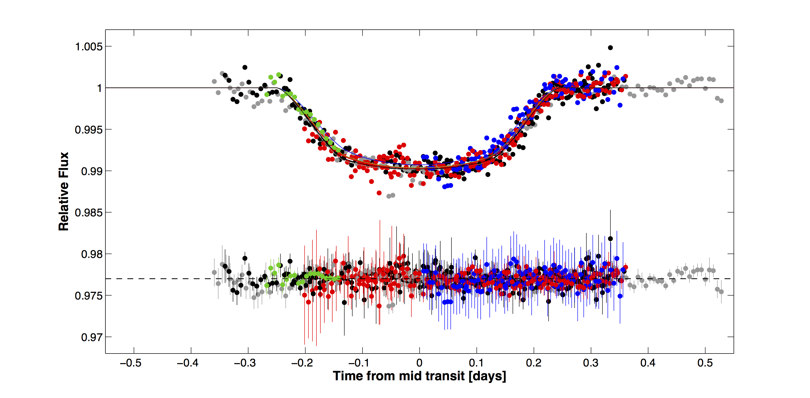
Photometric
follow-up observations of the transiting Neptune-mass
planet GJ 436b
Shporer et al. 2009, ApJ, 694, 1559
GJ 436b is the first exoplanet close in radius and mass to Neptune that was discovered to
show transits (Gillon
et al. 2007). In this work we collected 6 transit
light curves from immediately after the discovery of
transits (5 new + 1 already published), spanning one month.
The figure on the right shows the 6 data sets (blue)
overplotted by the fitted model (red solid line) and
residuals are at the bottom of each panel (black). Data was
obtained in 3 observatories using 4 telescopes. This work
refined the system parameters and constrained any variation
in the transit parameters (midtransit time and impact
parameter) with time. The constraints on the impact
parameter variation were consistent with a long-term
variation, which if confirmed could have explained why
transits were not identified previously in this system.
close in radius and mass to Neptune that was discovered to
show transits (Gillon
et al. 2007). In this work we collected 6 transit
light curves from immediately after the discovery of
transits (5 new + 1 already published), spanning one month.
The figure on the right shows the 6 data sets (blue)
overplotted by the fitted model (red solid line) and
residuals are at the bottom of each panel (black). Data was
obtained in 3 observatories using 4 telescopes. This work
refined the system parameters and constrained any variation
in the transit parameters (midtransit time and impact
parameter) with time. The constraints on the impact
parameter variation were consistent with a long-term
variation, which if confirmed could have explained why
transits were not identified previously in this system.
HAT-P-9b:
A low-density planet transiting a moderately faint F
star
Shporer et al. 2009, ApJ, 690, 1393
This is the discovery paper of the HAT-P-9b. 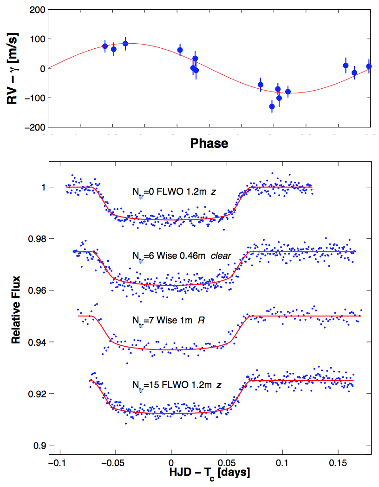It was identified as a transit
candidate with HATNet instruments at FLWO and SMA. I carried
out RV follow-up with the SOPHIE echelle spectrograph
mounted on the OHP 1.93 m telescope. The RV orbit is shown
in the top panel in the figure on the right (data in blue,
fitted model in red). I also carried out photometric
follow-up with the two telescopes at the Wise Observatory (1
m and 0.46 m) while additional transits were observed with
the FLWO 1.2m, shown in the bottom panel in the figure on
the right (data in blue, fitted model in red, and the label
includes transit number, observatory and telescope name, and
filter used). With a brightness of V = 12.3 mag, the
host F-type star is at the faint end of transiting planet
host stars discovered with similar instruments. The planet
is inflated, with a radius of Rp =
1.40 RJup and a mass of Mp
= 0.78 MJup, making a low mean planet density of
0.35 g cm-3.
Photometric
analysis of the optical counterpart of the black
hole HMXB M33 X-7
Shporer et al. 2007, A&A, 462, 1091
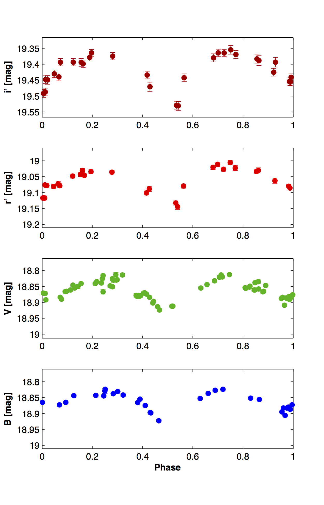M33 X-7 is the second brightest
X-ray source in the M33 galaxy, second only to its galactic
nucleus. It is a high-mass X-ray binary (HMXB) showing
eclipses in the X-ray every 3.45 days as the binary
companion passes in front of the X-ray source (Pietsch
et al. 2006). In this work we have identified the
optical counterpart by detecting a star at the same position
that shows variability in the visible light at the same
period. As shown in the figure on the right the variability
is detected in four optical bands: B and V (from the DIRECT
project, Mochejska
et al. 2000), and SDSS r' and i' (from the M33 CFHT
survey, Hartman
et al. 2006). The light curves show the familiar
pattern of the tidal ellipsoidal distortion of the star by
the nearby compact object (aka double peak shape). Using a
simultaneous multi-band double-harmonic period analysis I
confirmed the optical counterpart shows the same period as
the X-ray eclipses. This detection of the optical
counterpart opened the way to measuring its orbit through
radial velocities and deriving the mass of the compact
object dynamically. This was done by Orosz
et al. 2007, who measured a mass of 70.0 ± 6.9
for the optical counterpart and 15.65 ± 1.45
for the compact objects, confirming it is indeed a stellar
black hole in a binary system.
Photometric
follow-up of the transiting planet WASP-1b
Shporer et al. 2007, MNRAS, 376, 1296
In this work I carried out photometric follow-up of the
transiting planet WASP-1b, which is among the first
transiting planets discovered using small-aperture
wide-field instruments. The two transits included in this
work were obtained with the Wise Observatory 1 m telescope
within two weeks of the announcement of the planet's
discovery by the WASP team, and this follow-up study was
done in parallel to the one done by Charbonneau
et al. (2007). The results presented in this paper
included a refinement of the system parameters, including a
more precise planet radius and transit ephemeris. The
refined parameters showed that this planet has a large
radius for its mass, leading to a low mean density,
challenging theory of planet mass and radius. The figure
below shows the two transit light curves obtained in this
work (data in red, fitted model in blue, and residuals in
black at the bottom), from October 4, 2006 (left panel) and
October 9, 2006 (right panel).
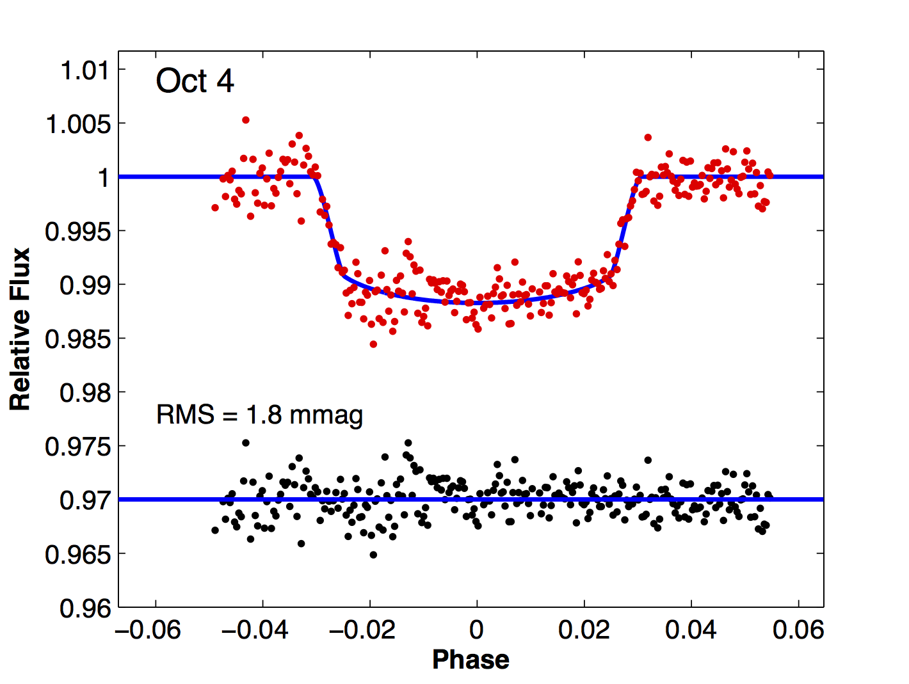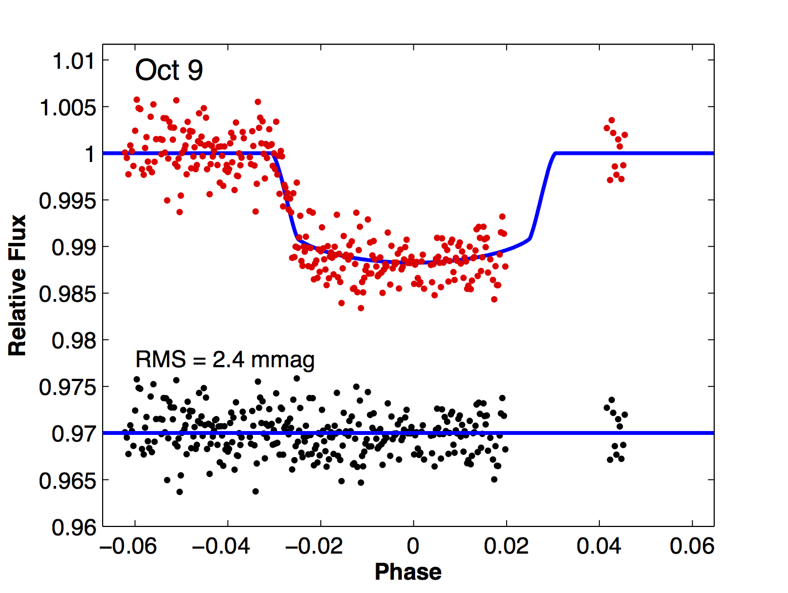
Long-term
V-band monitoring of the bright stars of M33 at the Wise
Observatory
Shporer & Mazeh 2006, MNRAS, 370, 1429
In this paper we report the results of the Wise Observatory
M33 variability search, which is a long-term V-band
photometric survey conducted with the Wise Observatory 1 m
telescope from 2000-2003. A total of 617 exposures of three
fields were obtained in 95 nights. Light curves of 6418
objects were obtained and made publicly available. Of those,
290 were identified as variables, including cepheids,
eclipsing binaries, periodic (unclassified), and
non-periodic. Among those variables 127 were new variables,
and for another 10 previously known non-periodic variables a
period was identified. The identified periods range from
2.11 to almost 300 days. For 50 of the variables we have
combined our data with that of the DIRECT data (Macri
et al. 2001, AJ, 121, 870), obtaining light curves of
up to 500 measurements with a time-span of about 7 years.
The results of this survey are also presented at wise-obs.tau.ac.il/~shporer/m33.